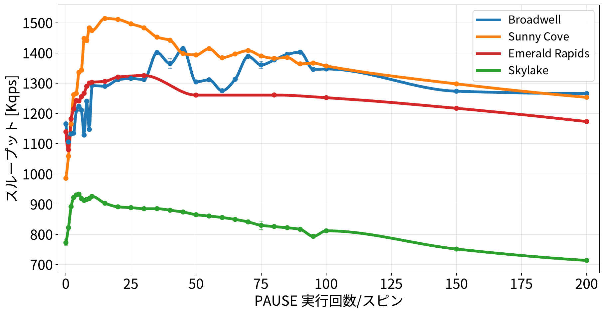
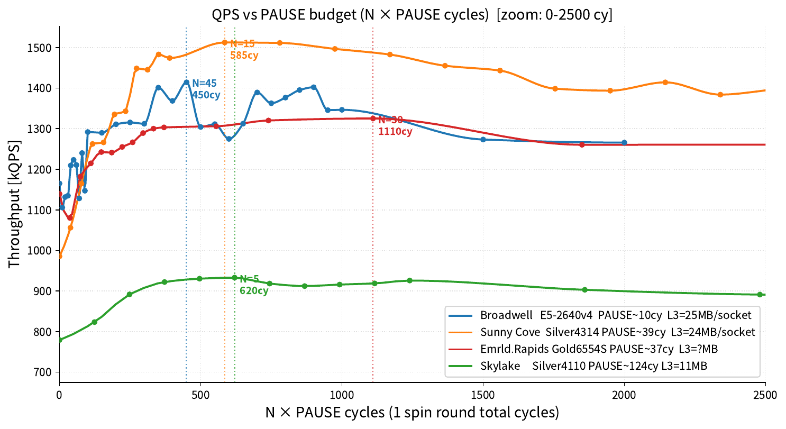
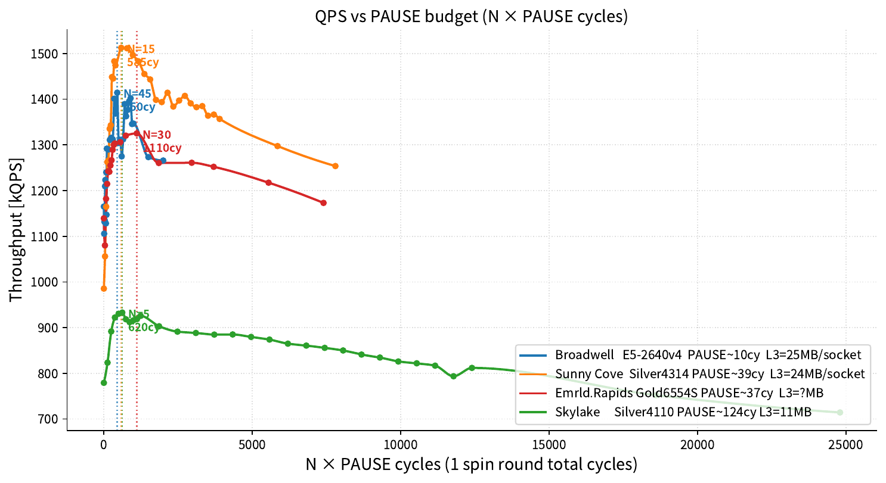
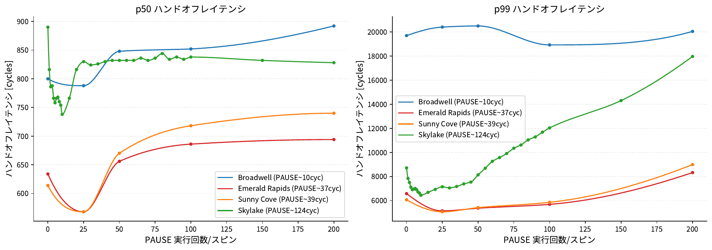
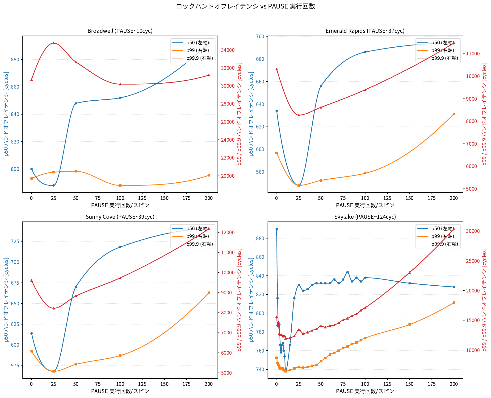
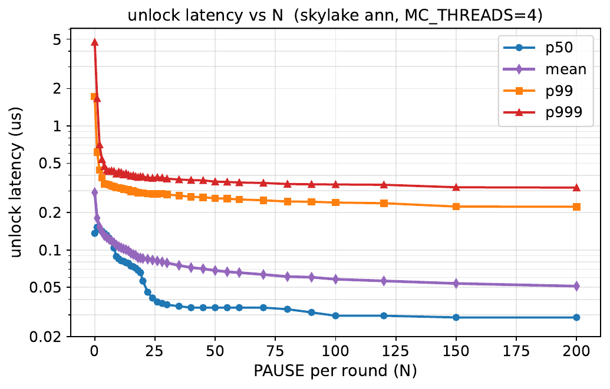
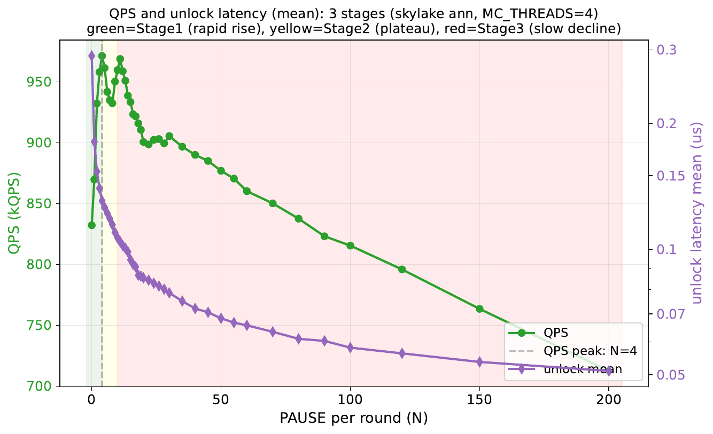
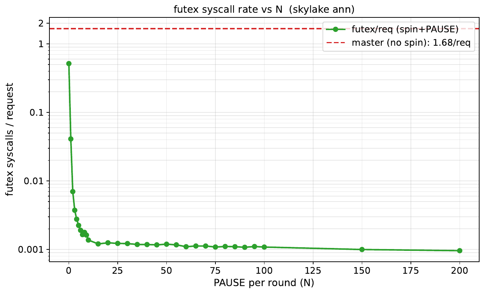
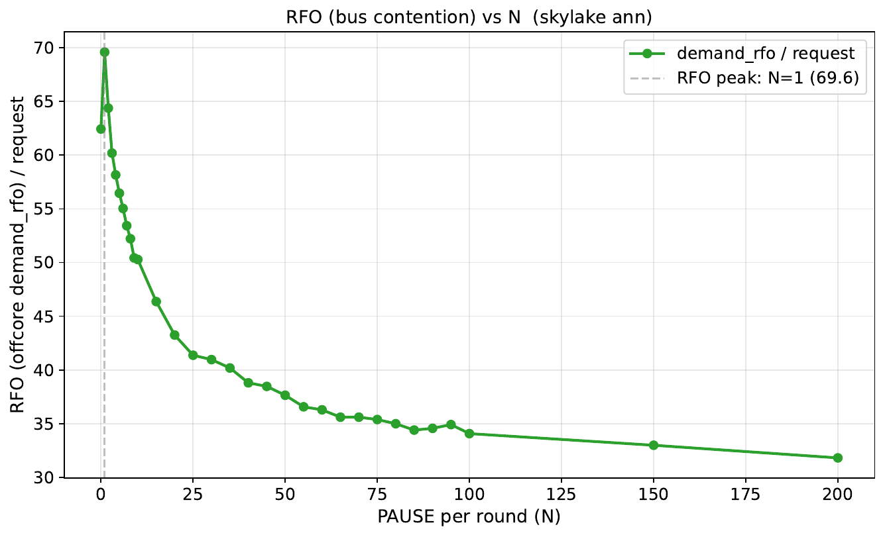
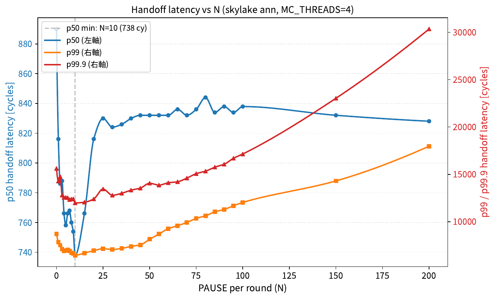

作成日: 2026-09-10 / 対象: 研究室での進捗共有・議論用
データセンタでは複数世代の CPU アーキテクチャが混在して稼働しているが、アプリケーションはアーキテクチャの違いを考慮せず同一設定で動作している。特に PAUSE 命令 の実行サイクル数はアーキテクチャによって最大 12 倍以上異なる:
| アーキテクチャ | PAUSE 実行サイクル (-O2 実測) |
|---|---|
| Broadwell | ~10 cy |
| Ice Lake | ~39 cy |
| Emerald Rapids | ~37 cy |
| Skylake | ~124 cy (異常に大きい) |
| サーバ | マイクロアーキ | ベースクロック | 物理コア数 | 備考 |
|---|---|---|---|---|
| xl170 (cloudlab) | Broadwell (E5-2640 v4) | 2.4 GHz | 10 | ring bus, inclusive L3 |
| sm110 (cloudlab) | Ice Lake (Silver 4314) | 2.4 GHz | 16 | mesh, non-inclusive L3 |
| c6620 (cloudlab) | Emerald Rapids (Gold 5512U) | - | - | mesh |
| ann (研究室) | Skylake (Silver 4110) | 2.1 GHz | 8 | mesh, 詳細分析対象 |
[trylock + PAUSE×N] × 30 rounds → futex fallback研究の問い: 同じアプリケーション設定 (memcached, スピンロック実装, ワークロード) で、 異なる CPU アーキテクチャを走らせた時、スループットや最適 PAUSE 回数はどう変わるか？
まず基本情報として、各アーキで PAUSE 命令が消費するサイクル数を単体実測 (pause_cycle_count.c を -O2 コンパイル、taskset で 1 コアに固定して測定)。単一の代表値なので表で提示する。
| アーキ | PAUSE cy | base clock | PAUSE 実時間 |
|---|---|---|---|
| Broadwell | 10.05 cy | 2400 MHz | 4.2 ns |
| Ice Lake | 38.74 cy | 2400 MHz | 16.1 ns |
| Emerald Rapids | 37.16 cy | - | - |
| Skylake | 124.20 cy | 2100 MHz | 59.1 ns (最も長い) |
N を 0 から 200 まで sweep した時の QPS の変化を各アーキで比較する。このグラフを載せる目的は、アーキごとの最適 N (peak 位置) が明確に違うことを示すため。

| アーキ | PAUSE cycle | peak N | peak QPS | vs N=0 での改善 |
|---|---|---|---|---|
| Skylake | 124 cy | N=5 | 933k | +21% |
| Ice Lake (Sunny Cove) | 39 cy | N=15 | 1514k | +54% |
| Emerald Rapids | 37 cy | N=30 | 1325k | +16% |
| Broadwell | 10 cy | N=45 | 1414k | +21% |
次に「N × PAUSE cy = スピン時間 (サイクル)」で正規化する。このグラフを載せる目的は、「PAUSE cycle で正規化すれば全アーキで peak が揃うか？」を検証するため。もし完全に揃えば、PAUSE cycle だけがアーキ間差の原因と結論できる。


| アーキ | peak N | peak PAUSE budget (cy) | 他アーキとの差 |
|---|---|---|---|
| Broadwell | N=45 | 450 cy | 基準 |
| Ice Lake | N=15 | 585 cy | Broadwell の 1.3 倍 |
| Skylake | N=5 | 620 cy | Broadwell の 1.4 倍 |
| Emerald Rapids | N=30 | 1110 cy | Broadwell の 2.5 倍 (突出) |
ロック解放 → 次のスレッドが獲得するまでのレイテンシ (handoff latency) を各アーキで比較。このグラフを載せる目的は 2 つ: (1) アーキごとに handoff の絶対値が違うこと、(2) 特に N=0 (PAUSE 無し条件) でも差があること、を示すため。

| アーキ | p50 最小値 (µs) と N | p99 最小値 (µs) と N |
|---|---|---|
| Sunny Cove (Ice Lake) | 0.24 @ N=25 | 2.1 @ N=25 |
| Emerald Rapids | 0.27 @ N=25 | 2.5 @ N=25 |
| Broadwell | 0.33 @ N=25 | 8.5 @ N=25 (高い) |
| Skylake | 0.35 @ N=10 (最小)、以降悪化 | 3.0 @ N=10 |

Skylake (124 cy) は N が小さくても十分なスピン時間を確保できる → 少ない N で peak。 逆に Broadwell (10 cy) は十分なスピン時間を確保するには N を大きくする必要がある。
N=0 (tight spin、PAUSE を全く挟まない条件) でも handoff latency にアーキ差がある:
| アーキ | TSC (MHz) | N=0 handoff p50 (cy) | N=0 handoff p50 (µs 参考) |
|---|---|---|---|
| Ice Lake (Sunny Cove) | 2400 | 614 | 0.256 |
| Emerald Rapids | 2100 | 634 | 0.302 |
| Broadwell | 2400 | 800 | 0.333 |
| Skylake | 2100 | 890 | 0.424 |
要因候補の一つとして cacheline 争奪 (RFO) を疑い、cache_miss sweep 実験で各アーキの RFO/req を実測した。もし「RFO が多いアーキ = handoff latency が長い」ならば、RFO 量が要因と特定できる。
| アーキ | N=0 handoff p50 (cy) | N=0 RFO/req (実測) | 相関 |
|---|---|---|---|
| Ice Lake | 614 | ~10 | 整合 |
| Emerald Rapids | 634 | ~10 | 整合 |
| Broadwell | 800 | 30-50 (Ice/Emerald の 3-5 倍) | 整合 |
| Skylake | 890 | 30-50 (Broadwell と同程度) | 整合 |
研究の問い: 1 つのアーキ (Skylake ann) に絞って、PAUSE 回数 N を変化させた時に QPS 山形が発生するメカニズムは何か？
pthread_mutex_unlock の実行時間を測定。この時間は「ロック cacheline (item_lock の変数) の M権を再取得するまでの時間」を含み、他コアの trylock による cacheline 争奪の激しさの指標になる。
static inline void spinlock_unlock(spinlock_t *sl) {
uint64_t t1 = rdtsc();
pthread_mutex_unlock(&sl->mutex); // M権再取得 + store + (futex_wake if needed)
uint64_t t2 = rdtsc();
spinlock_record_unlock(t2 - t1);
}このグラフを載せる目的: unlock latency (= ロック cacheline の M権再取得コスト) が N の増加に対して単調に減少すること、特に N=0 → N=4 の急降下が大きいことを示すため。この形が次の「QPS 山形の 3 段階解釈」の根拠になる。
主軸に mean を使う理由: QPS (= 平均スループット) の山形を説明する指標としては、tail 値 (p99/p999) より mean が理論的に適切 (QPS ≈ 4 workers / 平均 request 処理時間 で直接対応する)。tail は参考として併記する。

| N | QPS (k) | unlock mean (µs) | unlock p50 (µs) | unlock p99 (µs) |
|---|---|---|---|---|
| 0 | 832 | 0.29 | 0.14 | 1.72 |
| 1 | 870 | 0.18 | 0.15 | 0.61 |
| 4 (QPS peak) | 971 | 0.13 | 0.14 | 0.34 |
| 10 | 960 | 0.11 | 0.08 | 0.32 |
| 30 | 905 | 0.08 | 0.04 | 0.28 |
| 200 | 712 | 0.05 | 0.03 | 0.22 |
このグラフを載せる目的: QPS 山形と unlock latency の関係を 1 枚で見せることで、両者の対応関係 (どこまで unlock で説明でき、どこから説明できないか) を明確にするため。

| Stage | N 範囲 | QPS 挙動 | unlock latency mean | 対応関係 |
|---|---|---|---|---|
| Stage 1 | N=0 → N=4 | 832k → 971k (+17%) | 0.29µs → 0.13µs (2.2倍改善) | ✅ 明確な相関 (QPS 上昇と mean 急降下) |
| Stage 2 | N=4 → N=10 | 971k → 960k (plateau) | 0.13µs → 0.11µs (微減) | ✅ 相関維持 (両者とも大きな変化なし) |
| Stage 3 | N=10 → N=200 | 960k → 712k (-26%) | 0.11µs → 0.05µs (さらに減少) | ❌ 不整合 (QPS 悪化なのに mean は改善) |
このグラフを載せる目的: Stage 1 (N=0 → N=4 の QPS 急上昇) を支える別の要因として、 futex syscall 回数の激減があることを示すため。
実験内容: spinlock で 30 rounds トライしても取れない場合、futex にフォールバックしてスリープする。この futex syscall 発行回数 (per request) を N 毎に測定。

| N | futex/req | vs master 比 |
|---|---|---|
| master (デフォルト = spin なし) | 1.68 | 基準 |
| 0 (spin だけ、PAUSE なし) | 0.52 | 1/3.2 |
| 1 | 0.041 | 1/41 (12倍減) |
| 5 | 0.002 | 1/840 |
| 30 | 0.001 | ほぼゼロ |
| 200 | 0.001 | ほぼゼロ |
このグラフを載せる目的: cacheline 争奪 (RFO/req) の減少が QPS 改善に寄与するか、
どの Stage で効いているかを見るため。
RFO の詳細は rfo_explanation.html を参照。
実験内容: offcore_requests.demand_rfo (perf イベント) で 1 リクエストあたりの RFO 数を N 毎に測定。
offcore_requests.demand_rfo はコア単位の 集計値で、
特定のアドレス/ロックには絞れない。つまり以下すべてが混ざっている:

| N | RFO/req | vs N=0 比 |
|---|---|---|
| 0 (tight spin) | 62 | 基準 |
| 1 (peak) | 70 | +13% (増加!) |
| 5 | 56 | -10% |
| 10 | 50 | -19% |
| 30 | 41 | -34% |
| 200 | 32 | -48% |
クリティカルセクション長 (spinlock 保持時間) を測定した結果、mean と p99 が N 増加とともに減少することが確認された。これは Stage 1/2 の改善を裏付ける傍証になる (cacheline pingpong 頻度減少の証拠):
| N | QPS (k) | CS 長 mean (cy) | CS 長 p99 (cy) |
|---|---|---|---|
| 0 | 780 | 268 | 1576 |
| 5 (peak) | 912 | 232 | 1444 |
| 30 | 870 | 170 | 1380 |
| 200 | 700 | 125 | 1246 |
※ CS 長は memcached 内の複数の spinlock (item_lock + slabs_lock) の混合値。ワークロード共通で N とともに減少する傾向は確認できたが、その詳細分解は今後の課題。

作成: 2026-09-10 / 対象実験期間: 2026-06 〜 2026-09-10